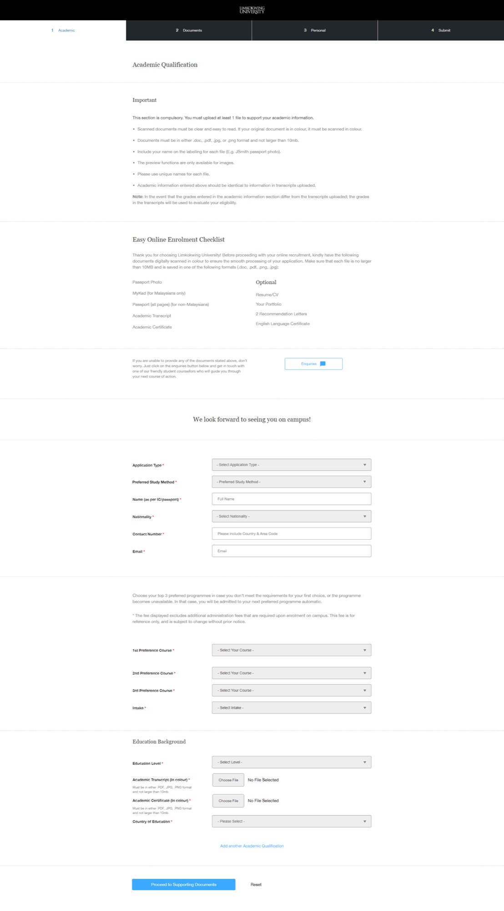
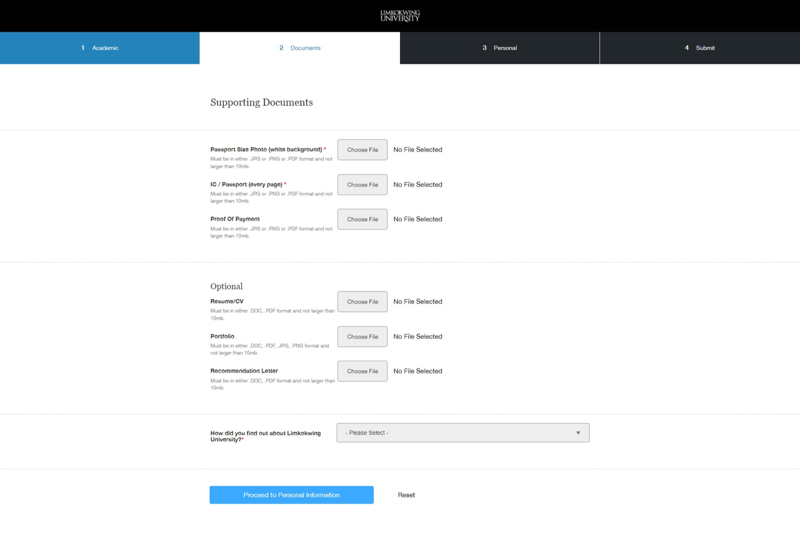
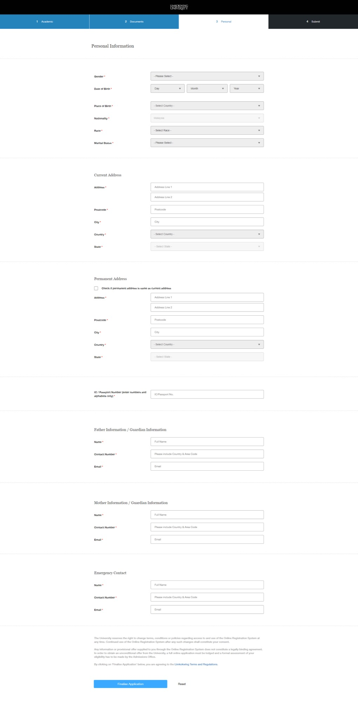
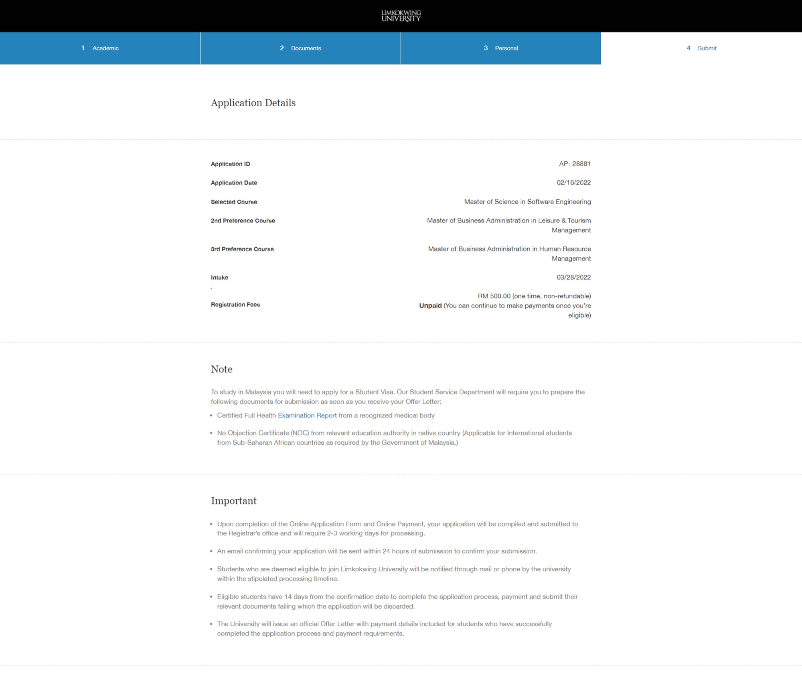

LUCT online registration — Cyberjaya pack
Captured 6 October 2026 from the public Limkokwing applicant wizard
(LKW_Online_Registration.pdf) and the Student Portal Forms pack.
Two procedures: A applicant online registration, B enrolled
Add/Drop maintenance. Malaysia government overlays (EMGS / Student Visa / NOC) are
not Lesotho NMDS / LGCSE policy.
1. Two processes captured
A — Applicant online registration
Public 4-step wizard + formal LUCT-MKT-003 + visa/health pack.
- Steps: Academic → Documents → Personal → Submit / Application Details
- 3 programme preferences + intake
- Required: photo, MyKad or full passport, transcript, certificate
- Optional: CV, portfolio, recommendations, English cert
- Fees on form: MY RM 500 · Intl RM 1000 + visa fee
- Raisd surface: Applicant portal (SDD-04)
B — Enrolled registration maintenance
Registry Add/Drop and related forms after first enrolment.
REG014Add Course ·REG015Drop Course- Approvals: Bursary (payment proof) → Faculty → Registry
- Add/Drop fee after week 4
REG006Change of Programme (may trigger new visa)- Raisd surface: Student Academic / Online Forms (CAP-10 / 51)
2. Wizard screenshots (Process A)
Resized previews from the LKW PDF (image-only capture). UI chrome only — no live student PII.




3. Registration procedure & SLAs (on-page)
- After form + payment complete → Registrar’s office; processing 2–3 working days.
- Confirmation email within 24 hours of submission.
- Eligible students notified by mail or phone within that window.
- Eligible students have 14 days from confirmation to complete process, payments, and documents — else application discarded.
- Official Offer Letter (with payment details) only after application process and initial payment requirements are met.
Malaysia government note on the same screen: Student Visa required; after offer, Student Service needs certified Full Health Examination Report and (for Sub-Saharan African internationals) NOC from the home education authority.
4. Evidence & forms pack
Key forms from Student Portal Forms.zip
Text extracts inventoried under control-plane docs/ai/materials/luct-online-registration/forms-extracts/.
| ID | Title | Process |
|---|---|---|
LUCT-MKT-003 | Application for Admission (Rev 01, 01/04/2023) | A |
LUCT-REG-024 | Micro-credential / Short Courses | A (lighter) |
| EMGS Health Examination Report | Malaysia HEI entry health exam guidelines | A · gov |
| Lampiran B | Health Declaration for Applicant | A · gov |
REG014 / REG015 | Add / Drop Course | B |
REG006 | Change of Programme | B |
| REG005–008, 017 · SSD* · LIB · FMG | Transcript, appeal, credit transfer, accommodation, etc. | Catalogue seeds |
5. CAP matrix (Raisd)
| CAP | Cyberjaya pack must support | Lesotho pilot substitution |
|---|---|---|
| CAP-02 | Multi-step apply; 3 preferences; intake; repeatable qualifications; marketing source | Same journey shape; LGCSE-oriented education levels |
| CAP-03 | Photo; ID every page; colour transcripts/certificates; optional English/CV/portfolio; proof of payment; ≤10 MB | LGCSE extract + Sesotho; campus document policy — no EMGS gate |
| CAP-07 | Application ID; fee status; offer after payment; 14-day window; Registrar 2–3 days | Newer CMS Academic→QA→Registrar; confirm Lesotho SLAs |
| CAP-10 | Add/Drop with Bursary→Faculty→Registry; week-4 fee | Confirm Lesotho week rules on newer CMS |
| CAP-50 | Student Visa + health exam + Sub-Saharan NOC (Malaysia) | Not Malaysia EMGS for Lesotho locals; intl policy Needs checking |
Fee amounts (RM 500 / RM 1000) are Cyberjaya form facts. Lesotho uses campus currency/policy (LSL / NMDS assist) — confirm before Live.